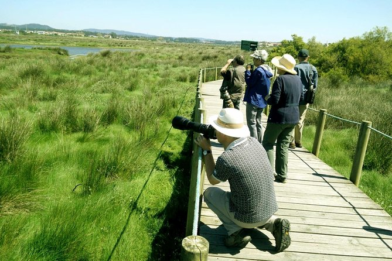

Eco-tourism in Okayama isn't just about sightseeing — it's about slowing down, connecting with the land, and
experiencing the local way of life in harmony with nature. Here are some activities that invite you to
travel gently and meaningfully:
🚲 Cycling Adventures
Discover Okayama at your own pace by bike. The region is known for its scenic cycling routes, including parts of the world-famous Shimanami Kaidō, a route that links Honshu to Shikoku with breathtaking views of the Seto Inland Sea. Ride through peaceful countryside roads, across bridges that span glittering waters, and into charming villages where time seems to move more slowly.

🌾 Farm Stays & Agricultural Experiences
Step into the shoes of a local farmer and enjoy a hands-on experience in Okayama's fertile fields. From planting rice to harvesting sweet peaches and Muscat grapes, you'll gain a new appreciation for the food on your table. Many farm stays also welcome guests into traditional homes, offering warm hospitality and a taste of authentic rural life.

🐦 Birdwatching
With its rivers, wetlands, and lush mountains, Okayama is home to a wide range of birds — from elegant herons to colorful kingfishers. Birdwatching here is more than just spotting species; it's a peaceful way to reconnect with nature, observe seasonal migrations, and appreciate the fragile balance of local ecosystems.

🌱 Guided Nature Tours
See Okayama through the eyes of a local eco-guide. These guided walks and hikes take you into the hidden corners of the region — quiet forests, mountain paths, and coastal trails. Along the way, guides share stories of local plants, traditions, and conservation efforts, helping you build a deeper bond with the land and its people.